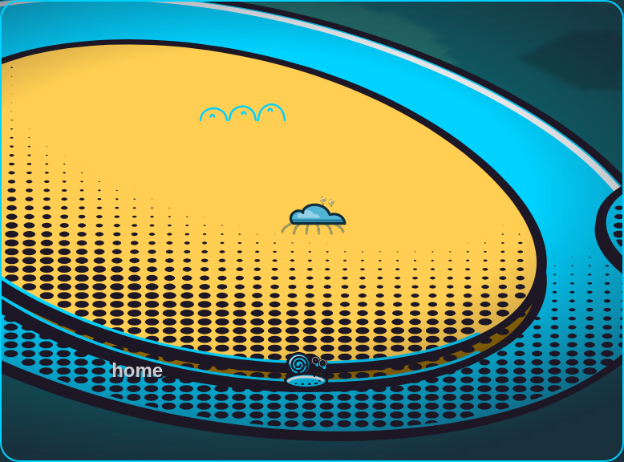
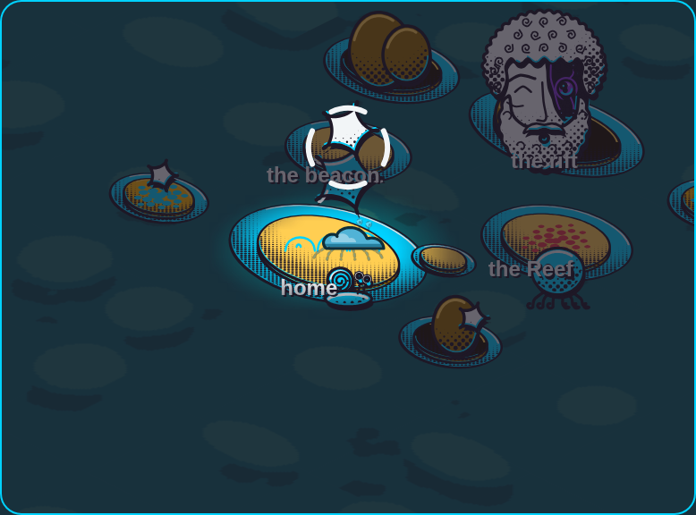
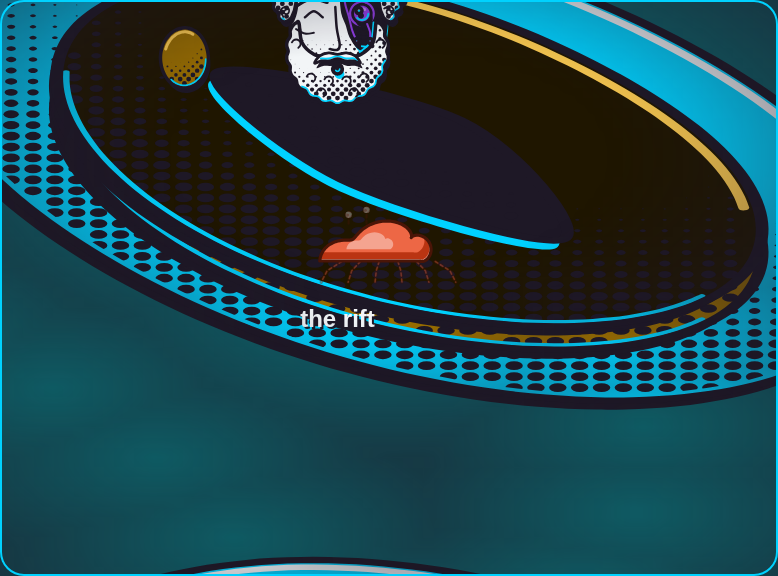
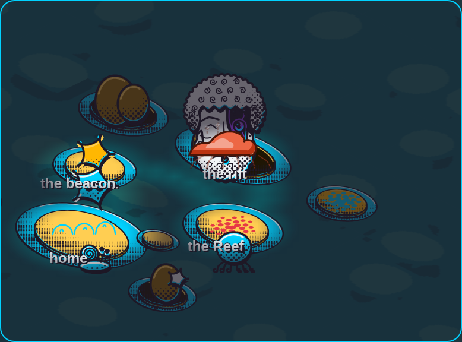

Same camera, same crab position. Left: maximum zoom (3.00). Right: minimum zoom (0.60). The terrain and the paths scale; the crab, the town, the creatures and the names keep their size.




Dashed legs on the crab are honest: legs and eyes have no measure here, so they are drawn as NO_DATA.